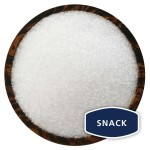

Finishing Salt

Finishing salts are the premier varieties of specialty salts. Harvested generally by hand in specific regions of the world, finishing salts are most admired for their unique textures—either moist crystals or delicate flakes.
Coarse Salt
Coarse salt is made up of large-grained salt crystals. Most coarse salts are best used in a grinder, providing an easy way of serving up freshly ground sea salt with all of your meals. Coarse salt tends to be less moisture sensitive than its finer-grained counterparts, so it resists caking and is easily stored.
Flake Salt
Flake sea salt is a light crystal reminiscent of snowflakes. Seawater is evaporated using the natural processes of sun and wind, producing salt brine that is fed into an open evaporating pan. The brine is then slowly heated until delicate pyramid-shaped crystals of salt are formed.
French Sea Salt

French sea salts are hand-harvested from pristine Atlantic seawater. These delicious sea salts are unrefined so they retain more of the trace minerals that naturally occur in seawater. FRENCH GREY SEA SALT, or Sel Gris, is harvested using traditional methods.
Hawaiian Sea Salt
Alaea sea salt is a traditional Hawaiian table salt used to season and preserve. A natural mineral called “Alae” (volcanic, baked red clay) is added to enrich the salt with iron oxide. This natural additive gives the salt its distinctive red color.
Sea Salt
Sea salt is a broad term that generally refers to unrefined salt derived directly from a living ocean or sea. It is harvested through channeling ocean water into large clay trays and allowing the sun and wind to evaporate it naturally.
Table Salt
Table salt is the most common kind of salt found in the average kitchen. It usually comes from salt mines. Once mined, it is refined and most minerals are removed until it is pure sodium chloride. A common sentiment is that this process creates a more bland and bitter salt than unprocessed varieties, not to mention the removal of the potential benefits of its trace minerals.
Italian Sea Salt
Italian sea salt is produced from the low waters of the Mediterranean Sea along the coast of Sicily. Salt pans are filled with seawater in the spring and left to evaporate, relying on the heat of the Sicilian sun and strong African winds. Harvesting takes place once the water has evaporated, and then the salt is crushed and ground without any further refining.